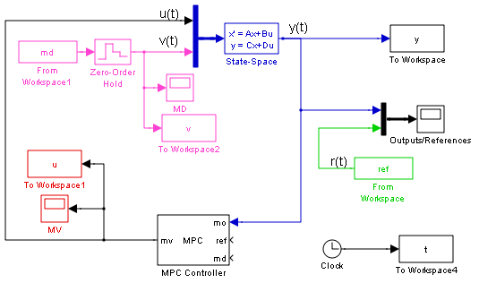
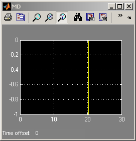
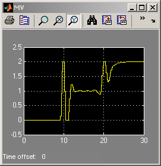
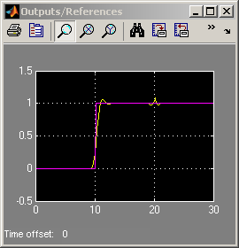
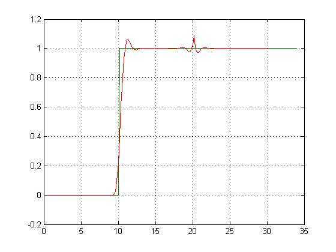
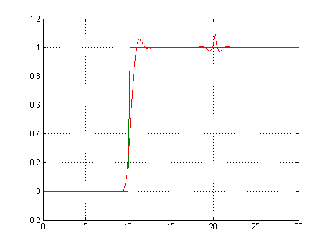
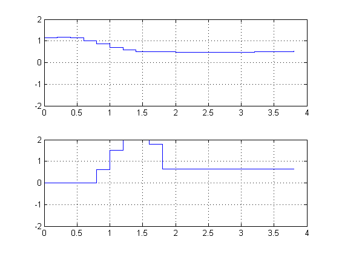
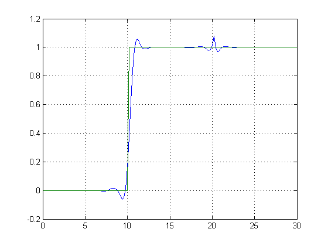

MPC Control with Anticipative Action (Look-Ahead)
Contents
This demonstration shows how to use MPC control with anticipative action on reference and measured disturbance trajectories.
Plant Model and MPC Controller Setup
We define an open-loop system with two inputs (one manipulated variable and one measured disturbance) and one output.
sys=ss(tf({1,1},{[1 .5 1],[1 1]}),'min');
% generate ABCD used as simulink model parameter.
[A B C D]=ssdata(sys);
x0=[0 0 0]'; % Initial plant state
Define type of input signals.
sys=setmpcsignals(sys,'MV',1,'MD',2);
Setup MPC object.
Ts=.2; % sampling time MV=struct('Min',0,'Max',2); % constraints on the manipulated variable. p=20; % prediction horizon m=10; % control horizon Weights=struct('MV',0,'MVRate',0.1,'Output',1); % weights
Create the MPC object.
mpc1=mpc(sys,Ts,p,m,Weights,MV);
%set simulation time.
Tstop=30;
Simulation Using Simulink®
if mpcchecktoolboxinstalled('simulink') % define the reference signal (used by both Simulink(R) and the MPC object) ref.time=0:Ts:(Tstop+p*Ts); ref.signals.values=double(ref.time>10)'; % define the measured disturbance (used by both Simulink(R) and the MPC object) md.time=ref.time; md.signals.values=-double(md.time>20)'; % Open Simulink(R) Model open_system('mpc_preview') % Turn off input/output not connected warnings since they are irrelevant. set_param('mpc_preview','UnconnectedInputMsg','off') set_param('mpc_preview','UnconnectedOutputMsg','off') % Start Simulation sim('mpc_preview',Tstop); else disp('Simulink(R) is required to run this part of the demo.') end
-->Converting model to discrete time. -->Integrated white noise added on measured output channel #1. -->MPC problem is constrained and "ManipulatedVariables.RateMin" is not completely specified or has infinite values. Setting values to -10 to prevent numerical problems in QP. -->The "Model.Noise" property of the "mpc" object is empty. Assuming white noise on each measured output channel.   
MATLAB Simulation
Let us run now the same simulation in MATLAB. In order to compare results, we first store the results of the previous simulation in Simulink®.
t1=t; y1=y; v1=v; u1=u;
We run a simulation using SIM to compute the MPC closed-loop signals.
time=0:Ts:Tstop; r=ref.signals.values; % reference signal v=md.signals.values; % measured disturbance signal params=mpcsimopt(mpc1); params.MDLookAhead='on'; params.RefLookAhead='on'; y=sim(mpc1,Tstop/Ts+1,r,v,params);
-->Converting model to discrete time. -->Integrated white noise added on measured output channel #1. -->The "Model.Noise" property of the "mpc" object is empty. Assuming white noise on each measured output channel.
Plot results and compare with the previous results -- They coincide.
plot(time,y,ref.time,r,t1,y1) grid
Step-by-Step Simulation Using MPCMOVE
We may just want to compute the MPC control action inside our simulation code. Let's see how to do this.
First we get the discrete-time state-space matrices of the plant.
[A,B,C,D]=ssdata(c2d(sys,Ts));
We store the closed-loop MPC trajectories in arrays YY,RR.
YY=[];
RR=[];
x=x0;
xmpc=mpcstate(mpc1); % Initial state of the MPC controller
Main simulation loop
for t=0:round(Tstop/Ts), % Plant equations: output update y=C*x+D(:,2)*v(t+1); YY=[YY,y]; RR=[RR,r(t+1)]; % Compute MPC law u=mpcmove(mpc1,xmpc,y,r(t+1:t+p),v(t+1:t+p+1)); % Plant equations: state update x=A*x+B(:,1)*u+B(:,2)*v(t+1); end
Plot results.
close all
plot(0:Ts:Tstop,YY,0:Ts:Tstop,RR,t1,y1)
grid
 If at any time during the simulation we want to check the optimal predicted trajectories, we can use an extended version of MPCMOVE. Assume we want to start from the current state and have a set-point change to 0.5 in 5 steps, and assume the measured disturbance has disappeared.
r=[ones(5,1);0.5*ones(p-5,1)]; v=zeros(p+1,1); [~,Info]=mpcmove(mpc1,xmpc,y,r(1:p),v(1:p+1));
-->Converting model to discrete time. -->Integrated white noise added on measured output channel #1. -->The "Model.Noise" property of the "mpc" object is empty. Assuming white noise on each measured output channel.
We now extract the optimal predicted trajectories and plot them.
topt=Info.Topt; yopt=Info.Yopt; uopt=Info.Uopt; close all subplot(211) title('Optimal sequence of predicted outputs') stairs(topt,yopt); grid axis([0 p*Ts -2 2]); subplot(212) title('Optimal sequence of manipulated variables') stairs(topt(1:p),uopt); axis([0 p*Ts -2 2]); grid
Linearization of MPC Controller
When the constraints are not active, the MPC controller behaves like a linear controller. We can then get the state-space form of the MPC controller, with y, [r(t);r(t+1);...;r(t+p-1)], and [v(t);v(t+1);...;v(t+p)] as inputs to the controller.
Get state-space matrices of linearized controller.
LTIMPC=ss(mpc1,'rv','on','on'); [AL,BL,CL,DL]=ssdata(LTIMPC); time=0:Ts:Tstop+p; ref1=double(time>10)'; v=-double(time>20)';
Get discrete-time plant model.
[A,B,C,D]=ssdata(c2d(sys,Ts));
We store the closed-loop MPC trajectories in arrays YY,RR.
YY=[];
RR=[];
x=x0;
xL=[x0;0;0];
xmpc=mpcstate(mpc1); % Initial state of the MPC controller
u=[];
Main simulation loop
for t=0:round(Tstop/Ts), % Plant output update y=C*x+D(:,2)*v(t+1); % Save output and refs value YY=[YY,y]; RR=[RR,ref1(t+1)]; % Compute the linear MPC control action u=CL*xL+DL*[y;ref1(t+1:t+p);v(t+1:t+p+1)]; % The following would be the input move provided by MPC: % uMPC=mpcmove(MPCobj,xmpc,y,ref(t+1:t+p),v(t+1:t+p+1)); % Plant update x=A*x+B(:,1)*u+B(:,2)*v(t+1); % Controller update xL=AL*xL+BL*[y;ref1(t+1:t+p);v(t+1:t+p+1)]; end
Plot results.
close all
plot(0:Ts:Tstop,YY,0:Ts:Tstop,RR)
grid
 if mpcchecktoolboxinstalled('simulink') bdclose('mpc_preview') end